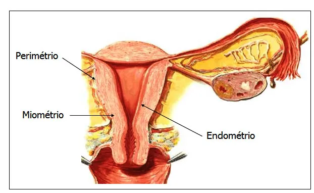
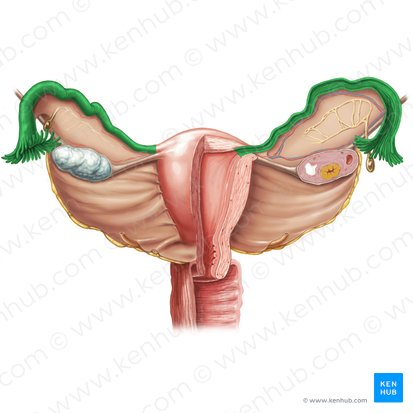
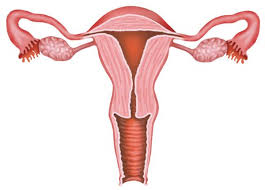

1. ¿Qué parte del útero conecta con la vagina?

Selecciona la respuesta correcta para cada pregunta:
1. ¿Qué parte del útero conecta con la vagina?
2. ¿Cómo se llama la capa más interna del útero?
3. ¿Qué estructura conecta el útero con los ovarios?
4. ¿Cuál es la capa muscular del útero?

5. ¿Qué forma tiene el útero en una mujer adulta sana?
